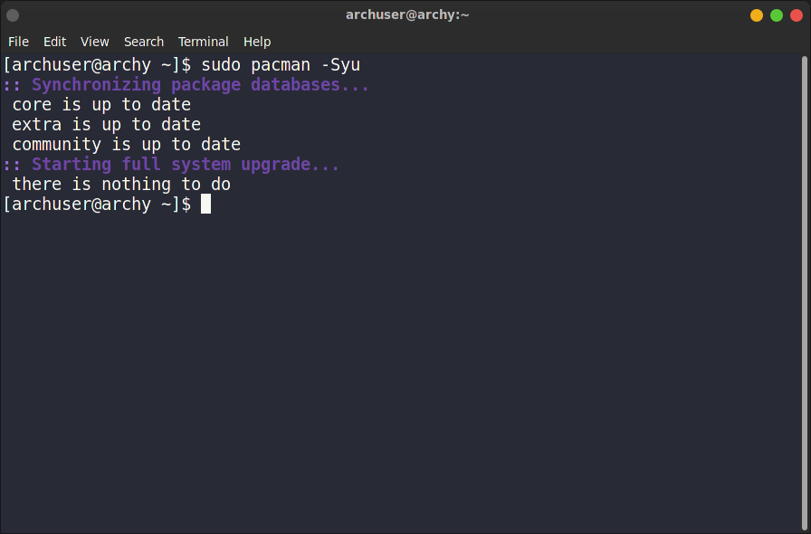
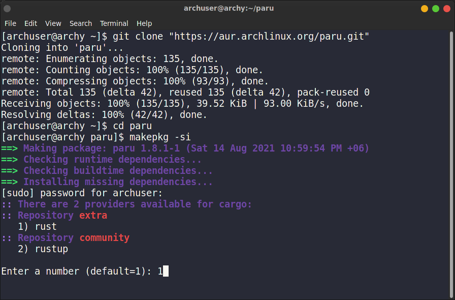
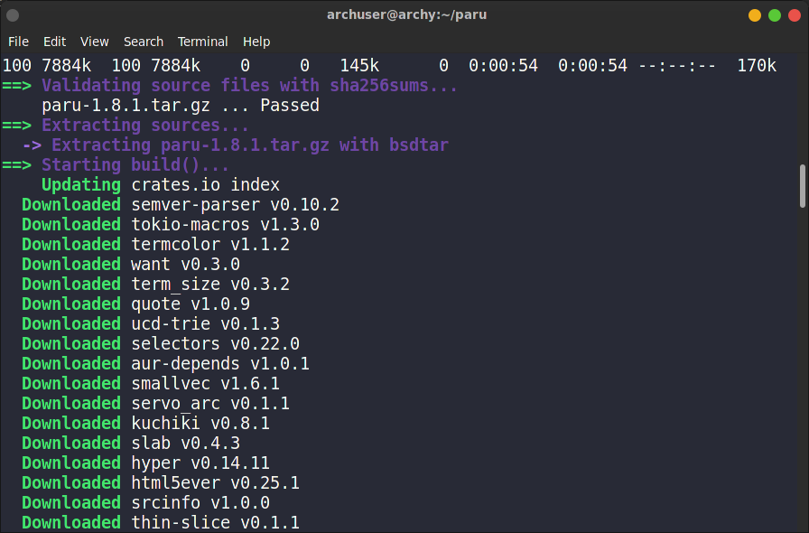
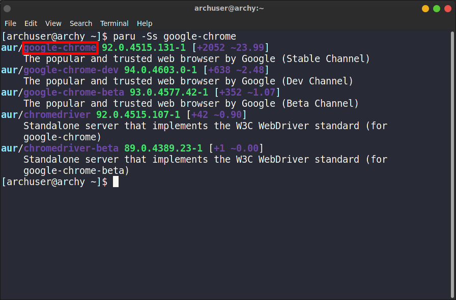
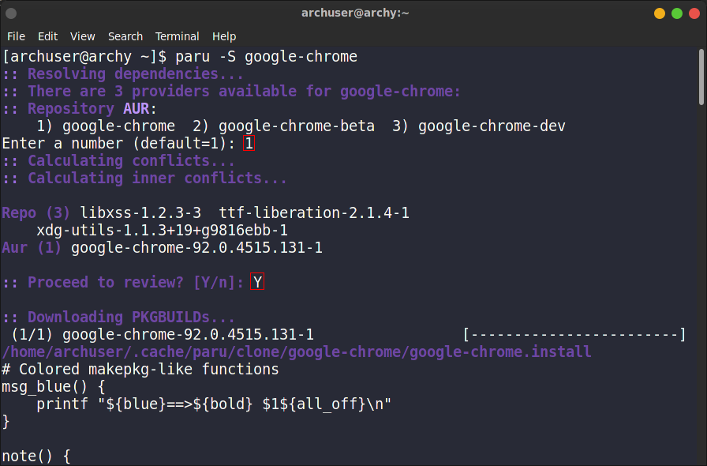
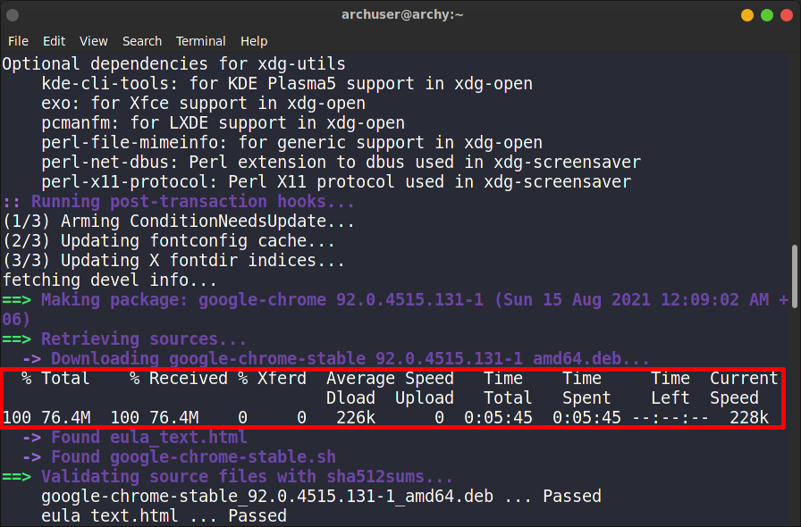
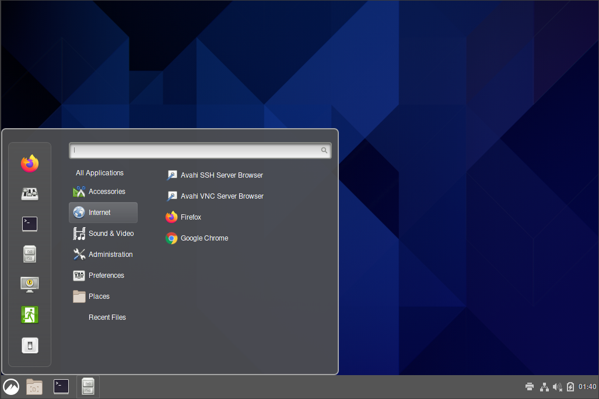
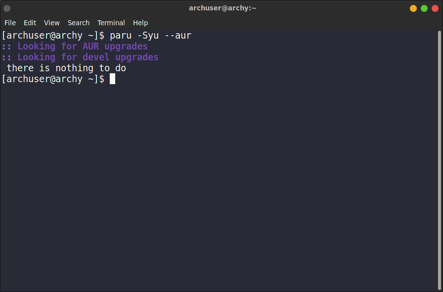

Although many Linux distros have a ton of packages in their repositories, sometimes they are not enough. Especially when
it comes to install some popular non-free proprietary packages. Because most of the GNU Linux distributions ship with
only FOSS softwares.
To mitigate this problems, some universal package managers come into play. Some of the popular ones are flatpak, snap and
appimage. We will cover them later.
Here Arch Linux is ahead of other distros. Arch Linux has its own unofficial repository named AUR (Arch User Repository). Many Arch Linux users across the
globe submit their works here and if submitted, they are ready for all Arch Linux as well as Arch based distros users to
install in their hardware.
If there is any linux package that is not in the Arch Linux repository, then it is almost certain that, it may be found in AUR.
Another advantage of AUR is, it doesn't make the system bloated like other universal linux package managers.
By default, AUR is not enabled, we need to enable them manually. In this section we will go through that process.
Before doing anything, make sure your system is up to date.
bash
sudo pacman -Syu

installing git
To install git, run this command:
bash
sudo pacman -S git
installing an AUR helper
AUR helpers are the programs that help installing AUR packages very easily. Basically enabling AUR means installing AUR
helper programs.
There are many AUR helper programs out there. Here we will install paru. It is written in
rust language and the successor of yay, another AUR helper. While yay is the most popular
one, it is not recommended for new users.
To install paru, execute the following commands one by one:
bash
git clone "https://aur.archlinux.org/paru.git"
cd paru
makepkg -si


After the installation is successfully done, close the terminal and open a new one.
installing softwares from AUR
To speak frankly, paru commands are almost same like the pacman commands. Meaning, installing and querying softwares
are same in both paru and pacman. Here is an example.
Let's install google-chrome. It is not in pacman
package manager. But it is available in AUR. Let's check it first.
bash
paru -Ss google-chrome

Now it's time to install the software. To do that, run:
bash
paru -S google-chrome
First of all, it will come up with the packages of same name or relevant one. In our case we need the first package, so we press
1.
Then there will come an option :: Proceed to review? [Y/n]: Simply press
Y.
After that, you will be presented with the review notes. Please go through them carefully if you understand them. After finishing
reading, press q.

Now you will see the package being downloaded.

checking the installed software
If you have done everything till this point then congrats... You successfully installed a package from AUR. Now it's time to check
the package. Go to your panel, and search for it. If everything is done properly, you will see the package installed.

updating the AUR packages
To update the AUR packages, simply run:
bash
paru -Syu --aur

That's all for now. Hope you enjoy your Linux system more :)